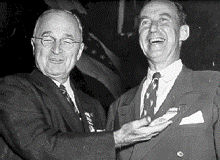
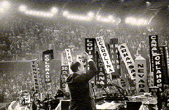
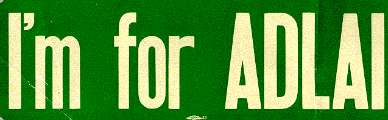
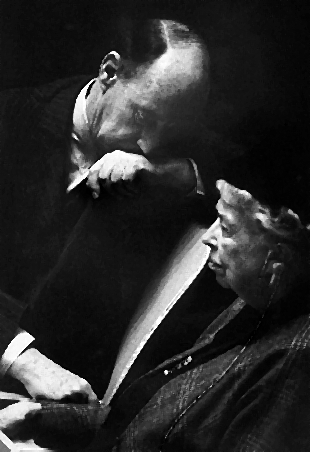
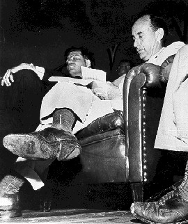

| President Truman approached Stevenson early in 1952, suggesting he seek the Democratic presidential nomination. Stevenson refused, stating that he preferred to continue his work in Illinois. Stevenson's hesitancy to run for the nomination became fodder for much political satire. Characteristically, Stevenson quipped, "I spend an awful lot of time reading about myself in papers and magazines these days. The awful thing is, I can't say I mind it much either." |  |
|  | Chicago hosted the 1952 Democratic National Convention in late July. As
governor of the host state, Stevenson opened the convention. Five days later, the
delegates drafted him as the party's candidate for president. Stevenson delivered his
acceptance speech in the early morning hours of July 26, saying, "Let's talk sense to
the American people. Let's tell them the truth, that there are no gains without
pains." |
| Alabama Senator John Sparkman was chosen as Stevenson's running mate. In August of 1952 Stevenson, Sparkman, and President Truman met to discuss campaign strategy at the White House. |
| One of many campaign stickers supporting Stevenson. |
 |
|  | Eleanor Roosevelt, a long-time supporter and friend of Stevenson, sent him a telegram after his nomination wishing him success. She stood by him during both elections and in the years following. Stevenson eulogized Mrs. Roosevelt when she died in 1962. |
| Photographer William M. Gallagher won the 1953 Pulitzer Prize for this photograph of Stevenson on the campaign trail in 1952. The image of the "Man with a Hole in his Shoe" remained with Stevenson and served as a symbol of his efforts during the 1956 presidential campaign. |  |
Go to the next section of photographs.
Return to the Mudd Library home page.
© 2000 Princeton University Library